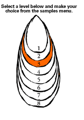
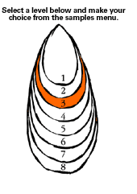

Level 3: Identifying Characteristics and Purposes of Music
PLANNING AND ASSESSMENT
Key teaching and learning concepts
Prior learning
Students need to have:
- experienced and identified the elements of music through focused listening and experimentation;
- listened to and discussed features of a range of music;
- learned to sing songs in unison, rounds and in parts, focusing on staying in tune and in time.
[Back To Top]
Suggested learning outcomes
The students will:
- identify and experiment with elements of music heard in two songs (PK);
- identify and discuss characteristics, contrasts in style, and the purposes of the selected music (UC);
- sing the two songs in tune and in time (CI).
Ideas for activities
Students can express ideas about cultural identity through listening, singing, playing, interpreting, and discussing a range of music:
- listen to, learn to sing, and discuss the meanings of the Māori and English words to The National Anthem of New Zealand (CD, Ministry of Education, 2000).
- Talk about the versions on the CD and how they compare with others heard e.g., at rugby matches. Identify the instruments heard in the versions on the CD.
- Talk about what makes a national anthem in terms of the style of music and why countries have national anthems. Listen to national anthems from other countries e.g., video of the opening ceremony of the Olympic Games. Discuss their musical characteristics.
- Listen to and learn in sections "Aotearoa" from Kiwi Kidsongs 10. Incorporate it into a study of New Zealand and countries of the world. Each day, practise the greetings from all the countries implied in the song.
- Take the first musical idea heard in Aotearoa. Get the students to play this back on instruments as an echo, (rhythm and/or melodic). As a rhythm ostinato, they can keep the rhythm pattern repeating throughout as they sing the song. Try other words and phrases from the song as ostinati. Play as call and response (echo) on different instrument types eg call = skin drums, response = wood, or on tuned instruments. Play as accompaniments to the song, recorded or live.
- Compare the two songs learned and share ideas about their purposes and musical characteristics especially style, texture, feel, mood (referring to elements of music such as tempo, rhythm, pitch, dynamics, tone colour). You will note that the national anthem is not syncopated or strongly rhythm and has an angular, soaring melody line to build emotion at the key points. It is slow and plodding whereas Aotearoa has a more funky, rock feel created through repetition of small melodic and rhythm ideas.
- Play on tuned instruments melodic ideas taken from "Aotearoa" and the national anthem. Play on untuned instruments the rhythms of some phrases or words, e.g., in the greetings heard in Aotearoa. Repeat the musical phrases as ostinati accompaniments to the sound tracks.
- Sing the songs focusing on keeping in time and in tune throughout the performance. Add ostinati as backings. Try two different versions of the same song, using a different ostinato pattern each time. Discuss the different feel created. Tape record a performance and evaluate the singing as a class. Work on improvements. Share performances with other classes.
More ideas
- In groups, create their own short musical tunes to match different greetings and countries e.g., "Talofa lava from Samoa", "Konnichi wa from Japan". Encourage their phrase to sound like the music heard from that country. Perform to others with a repeated rhythm ostinato to accompany their original musical phrase. Perform their versions to others and discuss the effectiveness of the ideas presented (e.g., tempo, melody, rhythm, dynamics, tone colours/sound sources used).
- Include original melodic phrases and greetings with rhythm backing as part of a storyboard on countries of the world as part of a whole class unit presentation.
- Listen to, talk about and learn songs from other countries.
[tip]
Assessment approaches
Formative
During the learning experiences ask the students the following so that their progress can be monitored in an ongoing way:
- Which elements of music stand out in this song? Can we recall any and perform them together?
- How do you know this music is from Aotearoa New Zealand?
- How do the songs compare? Which is better as a national anthem? Why?
- What musical ideas can we use for our own ostinato accompaniment?
- How can we improve our performances to make our two songs sound strong and important and of world-class standard?
Key Question: How well do the students analyse the music studied?
Assessment tasks could include:
- Identification of a range of uses of elements.
- Discussion of the purposes of each song.
- Interpretation of the overall styles of each song.
Possible strategies for assessment
- observation, discussion, reflective questioning, conferencing, storyboard presentations
as audio, visual, physical, written response/s.
[Back
To Top]
|

 
